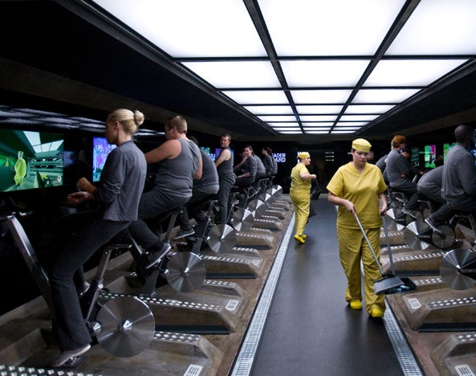

Menú

"[...] El "espejo negro" del título es lo que encontrará en cada pared, en cada escritorio, en la palma de cada mano: la pantalla fría y brillante de un televisor, un monitor, un teléfono inteligente." Comenta Charlie Brooker, creador de la serie.
Los primeros episodios nos presentan una serie que gira en torno a cómo la tecnología afecta nuestras vidas, en ocasiones sacando lo peor de nosotros, donde Brooker ha señalado que cada episodio tiene un tono diferente, un entorno diferente, incluso una realidad diferente, pero todos son acerca de la forma en que vivimos ahora y la forma en que podríamos estar viviendo en 10 minutos si somos torpes.
Anunciada el 12 de julio de 2012, la segunda temporada se estrenó el 11 de febrero de 2013. Al igual que la primera temporada, está formada por tres episodios con historias independientes.
Fue estrenada el 21 de octubre del 2016 en Netflix y consta de 6 capítulos. Se prevé una cuarta, en proceso de rodaje y post producción fijada para el 2017 y se apuesta por un público mayor con el éxito de las entregas previas.
